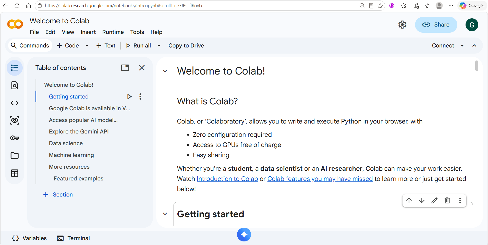

print("Hello World")Introduction to Programming and Python
Learning objectives
After completing this lesson, you should be able to:
- explain the basic steps involved in creating and running a computer program;
- distinguish between an editor, compiler, interpreter, linker, loader, and IDE;
- describe the main characteristics of the Python programming language;
- identify common application areas of Python;
- create and run a simple Python program in Google Colab;
- distinguish between syntax, runtime, and logic errors;
- use the
print()function to display output; - use the
sepandendarguments of theprint()function; - use basic escape sequences in strings.
Introduction to programming
A computer program is a sequence of instructions that tells a computer how to perform a particular task.
Computers ultimately execute instructions represented in machine code. Programming languages allow programmers to express algorithms and instructions in a form that is easier for humans to write, read, and maintain.
Programming languages can be classified in several ways. One common distinction is between low-level and high-level programming languages.
High-level programming languages provide abstractions that allow programmers to focus more on solving the problem and less on the technical details of the underlying hardware.
The Python language
Python is a general-purpose, high-level programming language.
Some of its main characteristics are:
- easy to read and write;
- free and open source;
- supports multiple programming paradigms;
- strongly and dynamically typed;
- interpreted;
- has a large standard library;
- cross-platform.
NotePython in this course
The primary goal of this course is not simply to learn the Python language.
Python is used as a tool for learning fundamental programming concepts, problem-solving techniques, and algorithmic thinking.
When designing algorithms, we primarily use the three fundamental control structures:
- sequence – instructions are executed one after another,
- selection – different paths can be chosen depending on a condition,
- iteration – instructions can be repeated using loops.
The course focuses on solving problems using the core features of Python. External libraries such as NumPy and pandas are not used.
The only exception is Python’s built-in random module, which will be used in some exercises when random values are required.
The concepts introduced in this course can also be applied when learning other programming languages.
What is Python commonly used for?
Python is used in many areas of computing, including:
- data analysis and machine learning;
- web applications;
- task automation;
- software testing and prototyping;
- business applications;
- scientific computing;
- scripting and everyday programming tasks.
A brief history of Python
Python was created by Guido van Rossum in the late 1980s.
Some important milestones are:
- 1994 – Python 1.0
- core data types and functions;
- support for functional programming;
- 2000 – Python 2.0
- Unicode support;
- list comprehensions;
- garbage collection;
- 2008 – Python 3.0
- major redesign and simplification of the language;
- removal of several duplicated or outdated language constructs;
- not backward compatible with Python 2.
Python 3 is the current generation of the language and is used throughout this course.
Tools used to create and run programs
Writing source code is only one part of creating a program. Several tools may be involved in transforming source code into a program that can be executed by a computer.
Editor
An editor is used to create and modify the source code of a program.
It allows the programmer to write, edit, and save the instructions that make up the program.
Compiler
A compiler translates source code into another representation, usually machine code or object code, before the program is executed.
The translation is typically performed for a larger part of the program at once.
Interpreter
An interpreter executes a program with the help of another program rather than producing a complete standalone machine-code program before execution.
Python uses an interpreter.
Linker
A linker combines separately translated program modules and libraries into the form required to create an executable program.
Loader
A loader loads the executable program into memory so that the operating system can start its execution.
Integrated Development Environment
An Integrated Development Environment (IDE) combines several tools needed for software development in one environment.
An IDE typically provides:
- a source code editor;
- tools for running programs;
- debugging tools;
- syntax highlighting;
- code completion;
- project and file management.
Common Python IDEs
There are several popular IDEs available for Python programming:
- Google Colab
- Jupyter Notebook
- Visual Studio Code
- PyCharm
- Spyder
- IDLE
TipOur environment: Google Colab
In this course, we will primarily use Google Colab.
Google Colab is a good choice for beginners because it is:
- browser-based – it runs directly in a web browser;
- easy to use – students can start programming with minimal setup;
- installation-free – no local Python installation is required;
- platform-independent – it can be used on Windows, macOS, Linux, and other systems with a modern web browser;
- cloud-based – notebooks can be saved online and accessed from different computers;
- easy to share – notebooks can be shared similarly to other Google documents.
Open Google Colab in your browser: Google Colab
Important: You need a Google Account to use Colab and save your notebooks.

Getting started with Google Colab
Google Colab provides a browser-based notebook environment for writing and executing Python programs.
A notebook consists of cells.
The two most important cell types are:
- code cells – contain executable Python code;
- text cells – contain explanations, headings, notes, and other formatted text.
Creating a new notebook
To create and run your first notebook:
- open Google Colab;
- create a new notebook;
- click inside a code cell;
- enter Python code;
- run the cell using the Run button or by pressing Shift + Enter.
Your first Python program
Traditionally, the first program written when learning a programming language displays the text Hello World.
The statement calls the Python print() function.
The text between quotation marks is passed to the function and displayed as output.
Both single and double quotation marks can be used:
print("Hello World")
print('Hello World')Errors in programs
Making mistakes is a normal part of programming. Finding and correcting errors is an important programming skill.
There are several common types of errors.
Syntax errors
A syntax error occurs when the source code violates the grammatical rules of the programming language.
For example:
print("Hello World)Python cannot execute this statement because the closing quotation mark is missing.
A syntax error usually results in an error message.
Runtime errors
A runtime error occurs while the program is being executed.
For example:
print(5 / 0)The syntax is valid, but division by zero cannot be performed.
Python reports an exception such as:
ZeroDivisionError: division by zeroLogic errors
A logic error occurs when the program can be executed but does not produce the intended result.
For example:
print("5" + "6")The result is:
56rather than:
11Logic errors can be especially difficult to find because the program may run without displaying an error message.
Debugging
The process of identifying and correcting errors in a program is called debugging.
When a program does not work as expected:
- read the error message carefully;
- identify the line where the problem occurred;
- check the code for syntax errors;
- check for typing mistakes;
- check whether the algorithm itself is correct;
- test smaller parts of the program separately;
- use the documentation or development tools if necessary.
Learning to understand error messages is an essential programming skill.
The print() function
The print() function is used to display one or more values.
Printing a single value
print("Hello")Printing multiple values
Several values can be passed to the print() function:
print("Monday", "Tuesday", "Wednesday")By default, Python separates the values with spaces.
Text, numbers, and expressions can also be combined:
print("5 * 6 is", 5 * 6)Printing an empty line
Calling print() without an argument produces an empty line:
print("First line")
print()
print("Third line")The sep argument
The optional sep argument specifies the separator placed between multiple values.
By default, the separator is a single space.
print("One", "Two", "Three")A different separator can be specified:
print("One", "Two", "Three", sep="-")print("One", "Two", "Three", sep="|")An empty string can also be used:
print("One", "Two", "Three", sep="")The end argument
By default, the print() function ends its output with a new line.
The optional end argument can change this behaviour.
print("One", "Two", sep=" ", end=" ")
print("Three")In this example, the second print() call continues on the same line.
Escape sequences
An escape sequence represents a special character inside a string.
Some commonly used escape sequences are:
| Escape sequence | Meaning |
|---|---|
\n |
new line |
\t |
horizontal tab |
\r |
carriage return |
New line
print("Monday\nTuesday\nWednesday")Tab
print("Name\tScore")
print("Anna\t85")
print("John\t92")Quotation marks inside strings
Sometimes quotation marks themselves need to appear in the output.
One possibility is to use different quotation marks around the string:
print("My name is 'Alain'")Another possibility is to use escape characters:
print("My name is \"Alain\"")Similarly:
print('My name is "Alain"')Multiline strings
Triple quotation marks can be used to create strings that span several lines.
print("""This text
contains
several lines.""")Both triple double quotation marks and triple single quotation marks can be used.
print('''First line
Second line
Third line''')Unicode characters
Python strings support Unicode characters.
For example:
print("Python \u263A")Unicode support makes it possible to work with characters from many different languages and symbol sets.
Summary
In this lesson, you learned:
- what a programming language is;
- the main characteristics and application areas of Python;
- the basic history of Python;
- the role of an editor, compiler, interpreter, linker, and loader;
- what an IDE is and some common Python IDEs;
- why Google Colab is used in this course;
- how to write and run a simple Python program;
- the difference between syntax, runtime, and logic errors;
- the basic process of debugging;
- how to use the
print()function; - how to use the
sepandendarguments; - how to use basic escape sequences and quotation marks in strings.
In the next lesson, we will introduce variables, expressions, and simple data types.